25 Bygga modeller i R
Nu ska vi ägna tid åt att arbeta med reella data för att förstå hur R kan användas för att successivt bygga upp modeller för en ökad förståelse av data.
Modelleringen handlar ofta om att förstå dels mönster och samband mellan variabler och utfall samt om hur residualer förhåller sig till sambanden. Vi kan finna mönster och samband med hjälp av visualiseringar och konkretisera dem genom att testa olika modeller. Vi upprepar visualisering och modellbygge men ersätter utfallsvariabeln med residualer från modellen och lär oss successivt mer om data - målet är att gå från en slags implicit kunskap om data till mer precis, exakt kunskap som genereras från allt bättre kvantitativa modeller.
Vi använder samma verktyg som i föregående avsnitt men lägger till ett par verkliga dataset: diamonds från ggplot2 och flights från nycflights13. Eftersom vi också ska arbeta med datum laddar vi in lubridate:
library(tidyverse)
library(modelr)
options(na.action = na.warn)
library(nycflights13)
library(lubridate)25.1 Varför är diamanter av låg kvalitet dyrare?
Data i diamonds talar för att diamanter av lägre kvalitet förefaller vara dyrare:

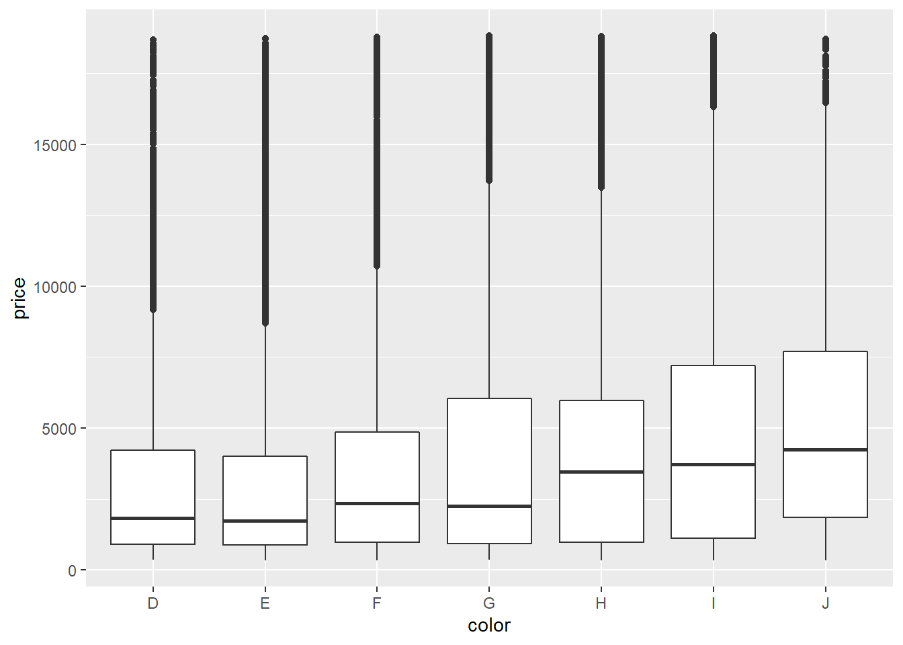
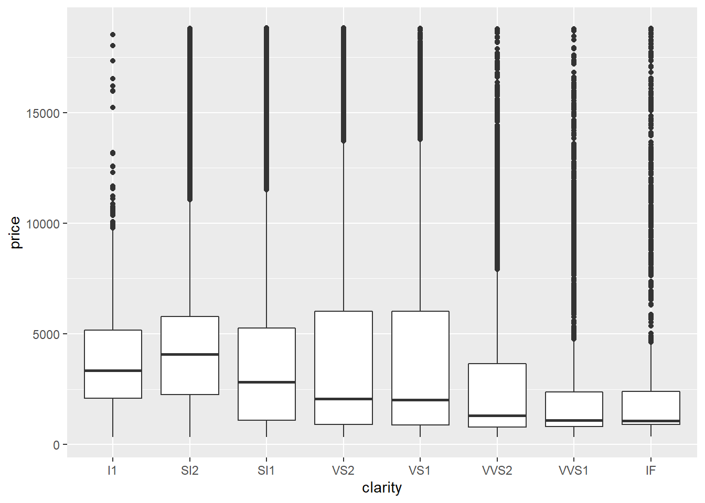
Notera att den sämsta diamant-färgen är svagt gulaktig (J) och den sämsta klarhetsgraden är synliga artefakter (I1).
25.1.1 Sambandet pris och karat
Det ser ut som att diamanter med lägre kvalitet har högre priser på grund av en viktig confounder, nämligen vikten (carat) på diamanten - vikten på diamanten är den enskilt viktigaste faktorn för priset och diamanter med lägre kvalitet tenderar att vara större.
## Warning: Computation failed in `stat_binhex()`:
## Package `hexbin` required for `stat_binhex`.
## Please install and try again.
För att se hur övriga kvaliteter påverkar priset kan vi bygga en modell vilken justerar för vikt (carat). Men först ska vi förenkla datasetet för att göra det lättare att arbeta med:
- Fokusera på diamanter mindre än 2,5 karat (vilka utgör 99,7% av data).
- Logaritmerar variablerna
caratochprice.
diamonds2 <- diamonds %>%
filter(carat <= 2.5) %>%
mutate(lprice = log2(price), lcarat = log2(carat))Sammantaget blir det lättare att se sambanden mellan carat och price:
## Warning: Computation failed in `stat_binhex()`:
## Package `hexbin` required for `stat_binhex`.
## Please install and try again.Log-transformeringen medför att mönstret blir linjärt vilket gör den mer lättare att arbeta med. Nu ska vi eliminera det linjära sambandet. Först tydliggör vi det linjära samabndet genom att skapa en modell:
Sedan undersöker vi vad modellen säger om data. OBS att vi här använder icke-logaritmerade data för att kunna lägga på prediktionerna på rå-data:
grid <- diamonds2 %>%
data_grid(carat = seq_range(carat, 20)) %>%
mutate(lcarat = log2(carat)) %>%
add_predictions(mod_diamond, "lprice") %>%
mutate(price = 2 ^ lprice)
ggplot(diamonds2, aes(carat, price)) +
geom_hex(bins = 50) +
geom_line(data = grid, colour = "red", size = 1)## Warning: Computation failed in `stat_binhex()`:
## Package `hexbin` required for `stat_binhex`.
## Please install and try again.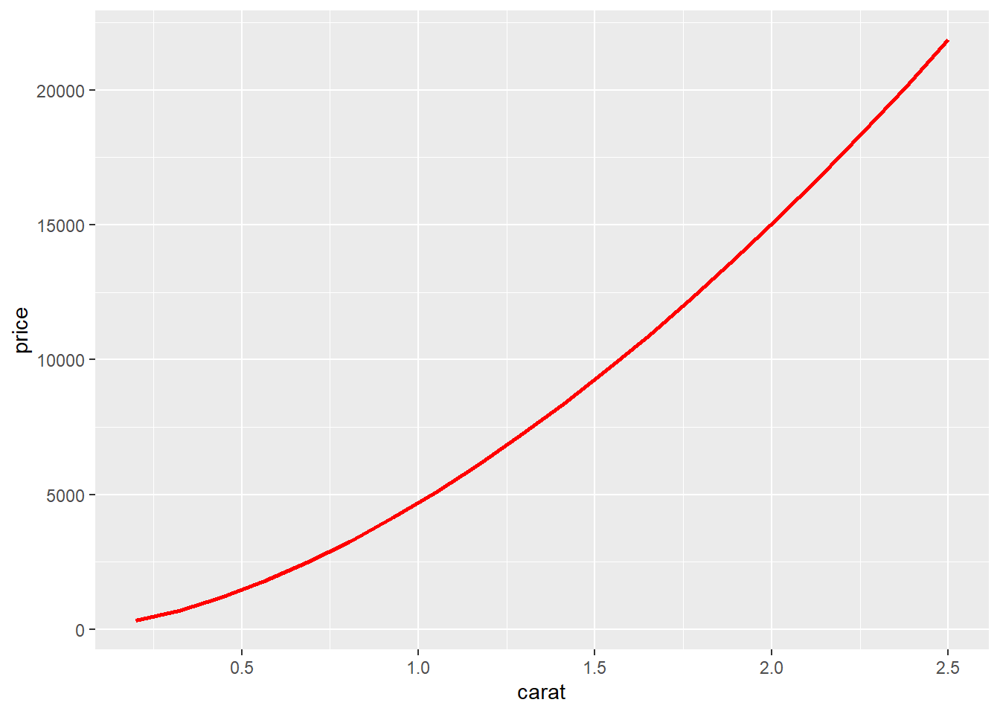
Detta säger något intressant om data. Enligt modellen är stora diamanter mycket billigare än förväntat,sannolikt beroende på att ingen diamant kostat mer än $19 000.
Om vi nu kikar på residualernas fördelning blir det tydligt att vi eliminerat det starka linjära sambandet, dvs vikten är en mycket viktig förklaring till priset:
diamonds2 <- diamonds2 %>%
add_residuals(mod_diamond, "lresid")
ggplot(diamonds2, aes(lcarat, lresid)) +
geom_hex(bins = 50)## Warning: Computation failed in `stat_binhex()`:
## Package `hexbin` required for `stat_binhex`.
## Please install and try again.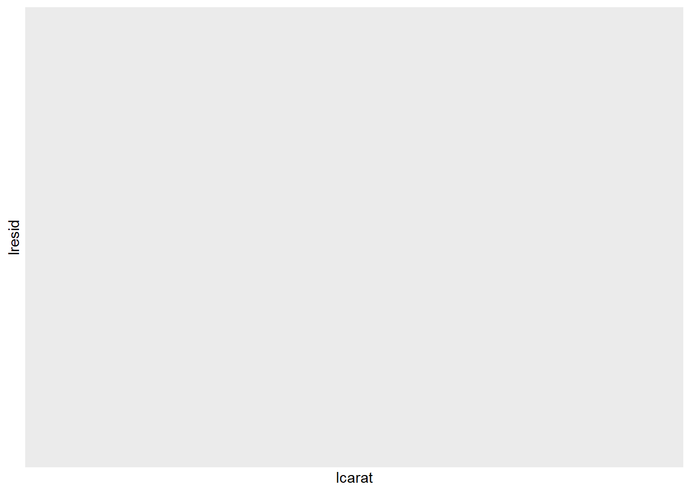
Om vi nu gör om våra initiala grafer oberoende av carat får vi följande:
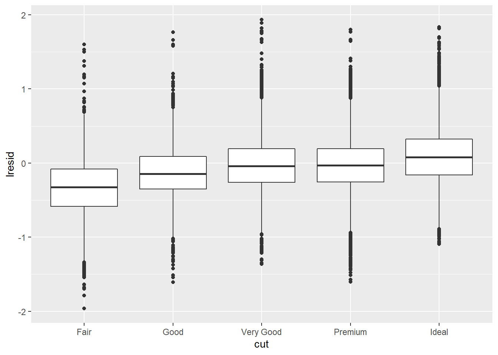
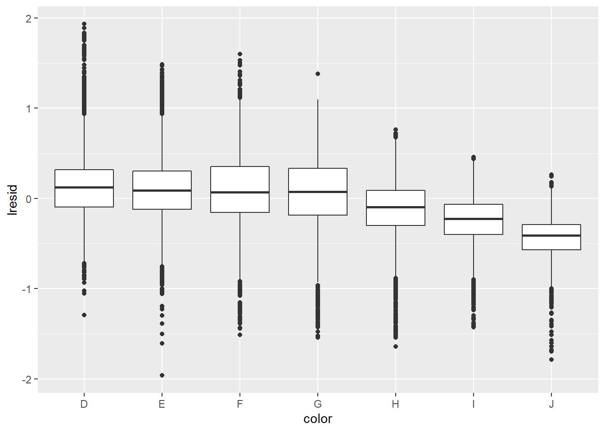
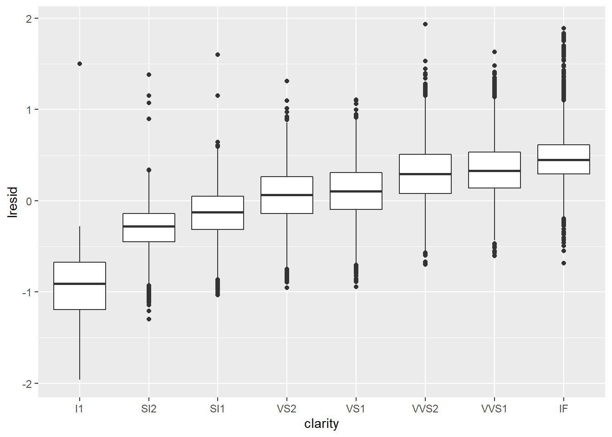
Här ser vi sambanden som vi intuitivt förväntar: diamanter med högre kvalitet kostar mer om vi tar hänsyn till deras storlek.
25.1.2 En mer komplicerad modell
Nu kan vi bygga ut vår modell genom att inkludera kvalitetsvariablerna:
Eftersom modellen nu innehåller 4 variabler/prediktorer blir det svårare att visualisera utfallet. Vi kan, under antagandet att de är oberoende av varandra, plotta dem individuellt i fyra grafer. För att göra det lite enklare för oss kan vi använda argumentet .model i data_grid():
## # A tibble: 5 x 5
## cut lcarat color clarity pred
## <ord> <dbl> <chr> <chr> <dbl>
## 1 Fair -0.515 G VS2 11.2
## 2 Good -0.515 G VS2 11.3
## 3 Very Good -0.515 G VS2 11.4
## 4 Premium -0.515 G VS2 11.4
## 5 Ideal -0.515 G VS2 11.4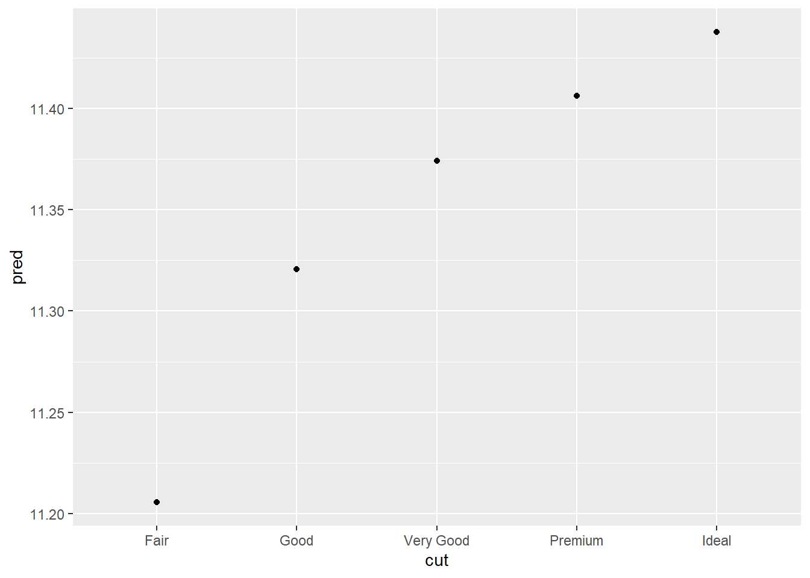
Om modellen innehåller variabler du inte specificerat explicit kommer data_grid() automatiskt att fylla i med “typiska” värden. För kontinuerliga variabler används medianen och för kategoriska används den vanligast förekommande kategorin.
diamonds2 <- diamonds2 %>%
add_residuals(mod_diamond2, "lresid2")
ggplot(diamonds2, aes(lcarat, lresid2)) +
geom_hex(bins = 50)## Warning: Computation failed in `stat_binhex()`:
## Package `hexbin` required for `stat_binhex`.
## Please install and try again.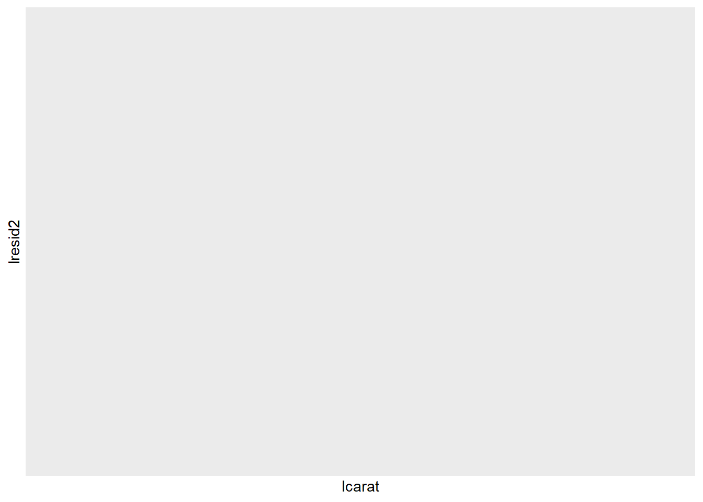
Denna graf indikerar att det finns ett antal diamanter med ganska avvikande residualer (en residual = 2 motsvarar ju ett pris på diamanten som är 4 ggr så högt än förväntat). I detta läge är det klokt att kika på sådana outliers individuellt:
diamonds2 %>%
filter(abs(lresid2) > 1) %>%
add_predictions(mod_diamond2) %>%
mutate(pred = round(2 ^ pred)) %>%
select(price, pred, carat:table, x:z) %>%
arrange(price)## # A tibble: 16 x 11
## price pred carat cut color clarity depth table x y z
## <int> <dbl> <dbl> <ord> <ord> <ord> <dbl> <dbl> <dbl> <dbl> <dbl>
## 1 1013 264 0.25 Fair F SI2 54.4 64 4.3 4.23 2.32
## 2 1186 284 0.25 Premium G SI2 59 60 5.33 5.28 3.12
## 3 1186 284 0.25 Premium G SI2 58.8 60 5.33 5.28 3.12
## 4 1262 2644 1.03 Fair E I1 78.2 54 5.72 5.59 4.42
## 5 1415 639 0.35 Fair G VS2 65.9 54 5.57 5.53 3.66
## 6 1415 639 0.35 Fair G VS2 65.9 54 5.57 5.53 3.66
## 7 1715 576 0.32 Fair F VS2 59.6 60 4.42 4.34 2.61
## 8 1776 412 0.290 Fair F SI1 55.8 60 4.48 4.41 2.48
## 9 2160 314 0.34 Fair F I1 55.8 62 4.72 4.6 2.6
## 10 2366 774 0.3 Very Good D VVS2 60.6 58 4.33 4.35 2.63
## 11 3360 1373 0.51 Premium F SI1 62.7 62 5.09 4.96 3.15
## 12 3807 1540 0.61 Good F SI2 62.5 65 5.36 5.29 3.33
## 13 3920 1705 0.51 Fair F VVS2 65.4 60 4.98 4.9 3.23
## 14 4368 1705 0.51 Fair F VVS2 60.7 66 5.21 5.11 3.13
## 15 10011 4048 1.01 Fair D SI2 64.6 58 6.25 6.2 4.02
## 16 10470 23622 2.46 Premium E SI2 59.7 59 8.82 8.76 5.25Tabellen ger väl knappast några ledtrådar till en rimlig förklaring men generellt bör outlieras av detta slag föranleda oss att fundera över om det finns något problem med vår modell eller om det finns felaktiga data.
25.2 Vad är det som påverkar antalet dagliga flighter?
Låt oss gå igenom en liknande process med det andra datasetet, flights. Vi börjar med att beräkna antalet flighter per dag och visualisera dessa med ggplot2:
daily <- flights %>%
mutate(date = make_date(year, month, day)) %>%
group_by(date) %>%
summarise(n = n())## `summarise()` ungrouping output (override with `.groups` argument)## # A tibble: 365 x 2
## date n
## <date> <int>
## 1 2013-01-01 842
## 2 2013-01-02 943
## 3 2013-01-03 914
## 4 2013-01-04 915
## 5 2013-01-05 720
## 6 2013-01-06 832
## 7 2013-01-07 933
## 8 2013-01-08 899
## 9 2013-01-09 902
## 10 2013-01-10 932
## # ... with 355 more rows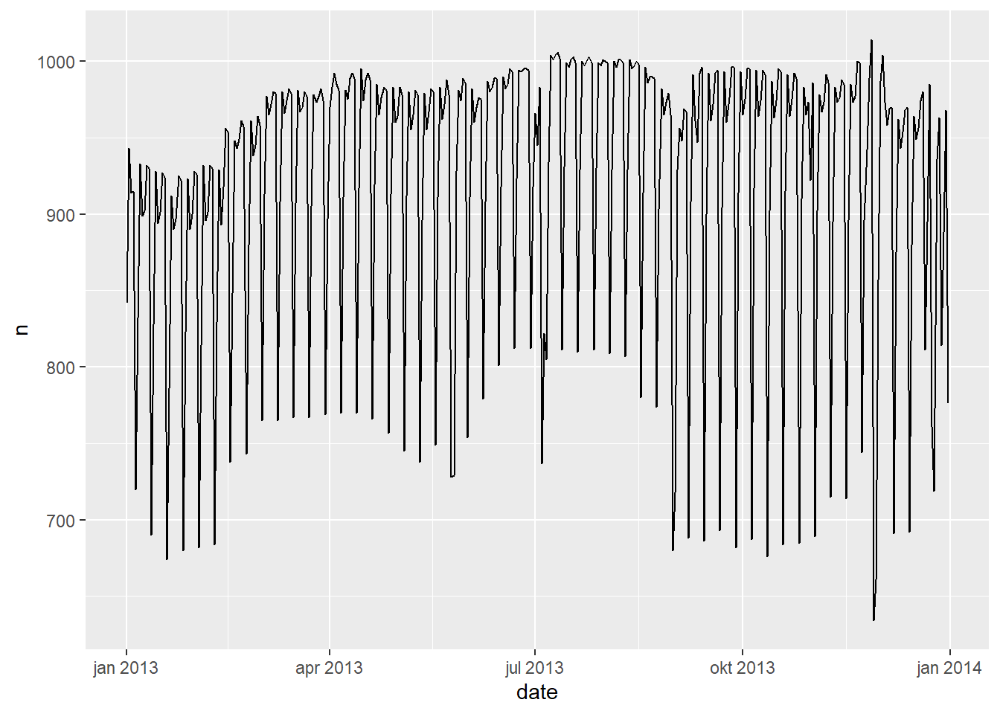
25.2.1 Veckodag
Det är knappast intuitivt att utifrån rådata förstå långtidstrenden eftersom det finns en stark effekt utifrån vilken veckodag som flighterna sker. Vi kollar in fördelningen över veckodagarna:
daily <- daily %>%
mutate(wday = wday(date, label = TRUE))
ggplot(daily, aes(wday, n)) +
geom_boxplot()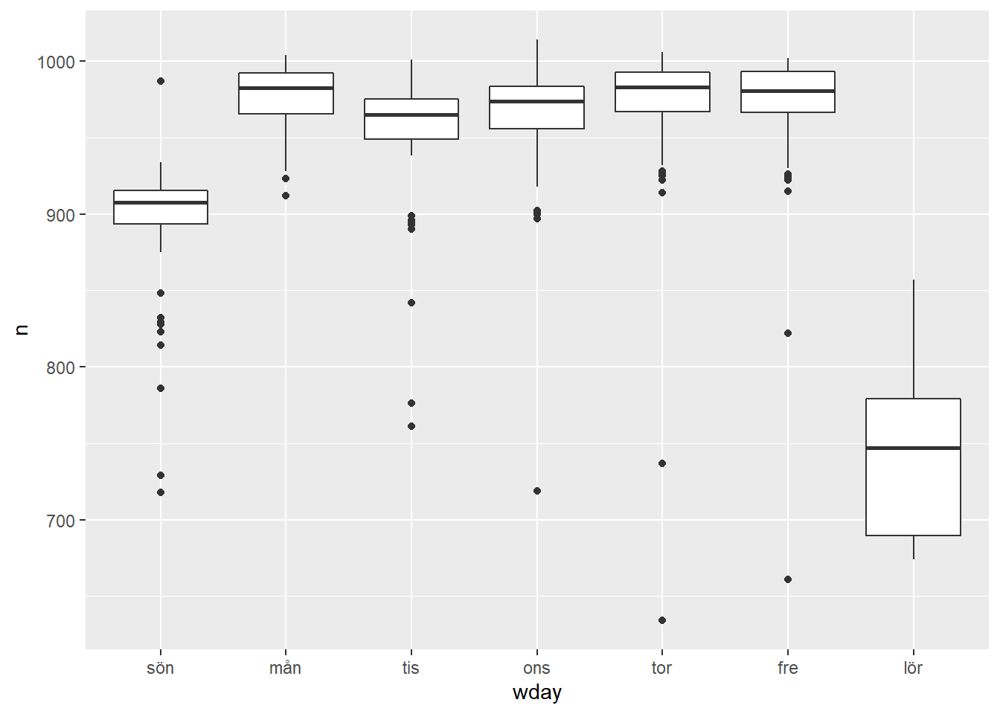
Det finns betydligt färre flighter på helgerna eftersom de flesta är affärsresor. Vi kan skapa en modell för att eliminera effekten av veckodagar och lägga på prediktionerna på observationerna:
mod <- lm(n ~ wday, data = daily)
grid <- daily %>%
data_grid(wday) %>%
add_predictions(mod, "n")
ggplot(daily, aes(wday, n)) +
geom_boxplot() +
geom_point(data = grid, colour = "red", size = 4)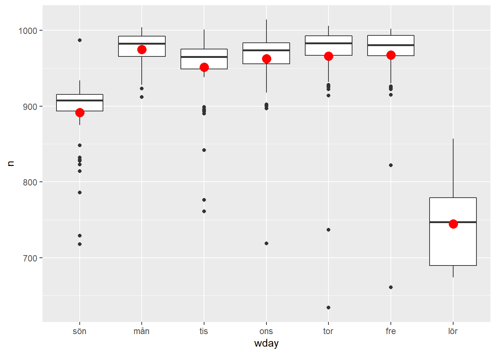
Så kan vi beräkna och visualisera residualerna:
daily <- daily %>%
add_residuals(mod)
daily %>%
ggplot(aes(date, resid)) +
geom_ref_line(h = 0) +
geom_line()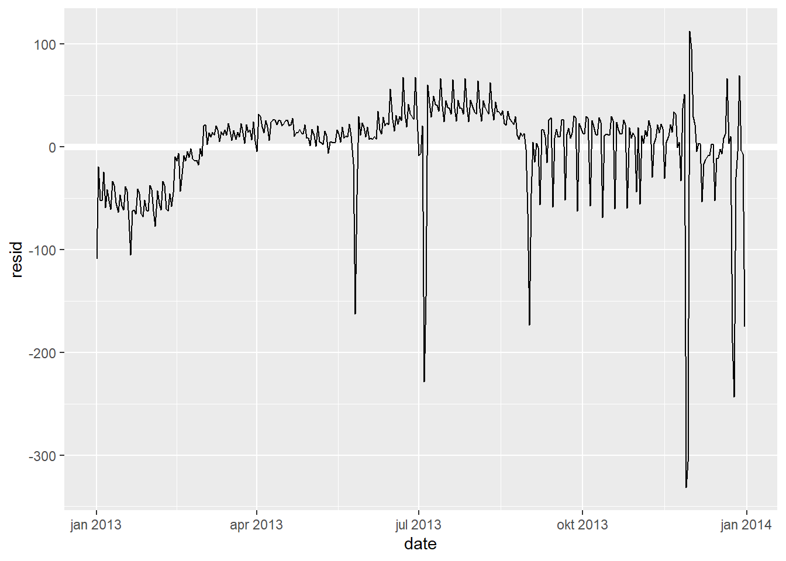
Notera förändringen på y-axeln - Den anger nu avvikelsen från det förväntade antalet flighter givet veckodag. Detta är bra information eftersom vi nu avlägsnat mycket av den starka effekten av veckodag och vi ser tydligare andra, mer subtila mönster som kvarstår:
- Modellen verkar fungera sämre på datum i juni och senare. Om vi ritar en plot per veckodag kan vi se en möjlig förklaring:
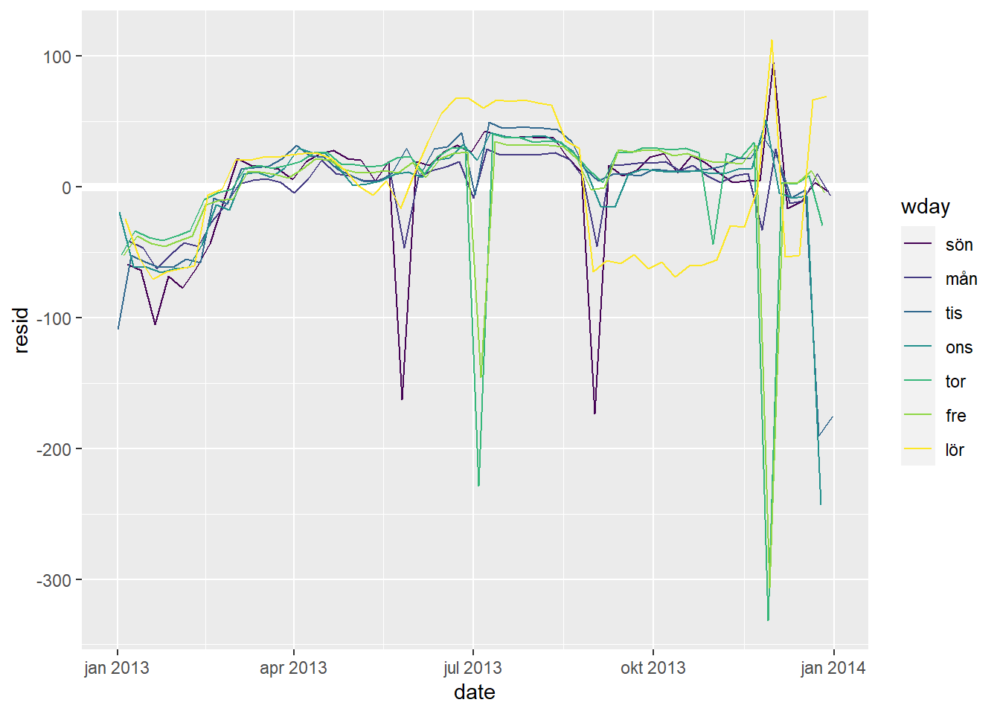
Vi ser att att modellen är sämre på att fånga antalet flighter på lördagar - under sommaren finns det fler flighter än förväntat och under hösten är det färre. Vi ska lite senare se hur vi kan fånga detta mönster lite effektivare.
- Det finns några dagar med betydligt färre flighter än förväntat. Låt oss se vilka dessa är:
## # A tibble: 11 x 4
## date n wday resid
## <date> <int> <ord> <dbl>
## 1 2013-01-01 842 tis -109.
## 2 2013-01-20 786 sön -105.
## 3 2013-05-26 729 sön -162.
## 4 2013-07-04 737 tor -229.
## 5 2013-07-05 822 fre -145.
## 6 2013-09-01 718 sön -173.
## 7 2013-11-28 634 tor -332.
## 8 2013-11-29 661 fre -306.
## 9 2013-12-24 761 tis -190.
## 10 2013-12-25 719 ons -244.
## 11 2013-12-31 776 tis -175.För den som är bekant med helgdagar i USA känner igen dessa dagar: Nyårsdagen, 4 juli, thanksgiving och julhelgen + några till.
- Det verkar finnas någon mindre uttalad långvarigare trend över året. Vi kan lyfta fram den med hjälp av
geom_smooth():
daily %>%
ggplot(aes(date, resid)) +
geom_ref_line(h = 0) +
geom_line(colour = "grey50") +
geom_smooth(se = FALSE, span = 0.20)## `geom_smooth()` using method = 'loess' and formula 'y ~ x'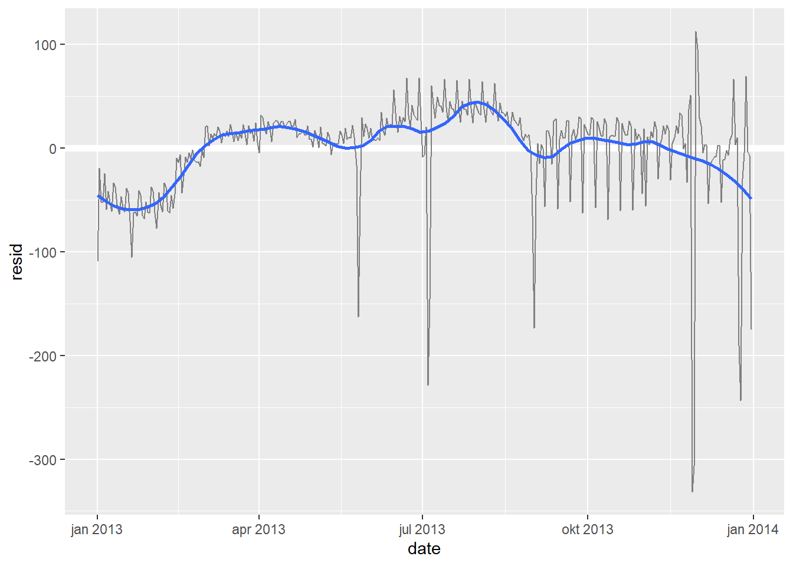
Det är färre flighter i januari och december men fler under sommaren. Vi skulle sannolikt behöva data över fler år för att förklara detta så vi lämnar det därhän för nu.
25.2.2 Lördags-effekten
Hur kan vi förklara avvikelsen på lördagar? En rimlig startpunkt är att gå tillbaka till rådata och välja ut lördagar:
daily %>%
filter(wday == "lör") %>%
ggplot(aes(date, n)) +
geom_point() +
geom_line() +
scale_x_date(NULL, date_breaks = "1 month", date_labels = "%b")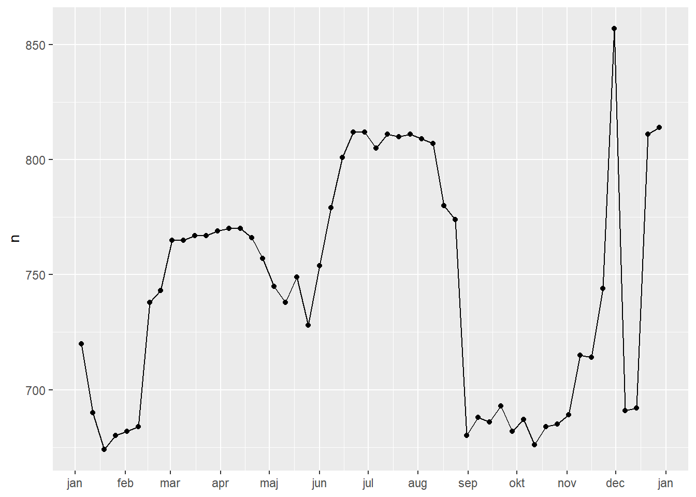
Detta mönster är förenligt med semesterperioden på sommaren, fler kan antas semester-resa på lördagar. Men varför finns fler lördags-flighter under våren än på hösten? Kan det vara så att det är mindre vanligt att ta semester under hösten eftersom de stora Thanksgiving och Julhelgerna infaller då? Det finns inte data att undersöka denna hypotes men för övningens skull, låt oss skapa en termins-variabel som grovt fångar det tre skol-terminerna:
term <- function(date) {
cut(date,
breaks = ymd(20130101, 20130605, 20130825, 20140101),
labels = c("spring", "summer", "fall")
)
}
daily <- daily %>%
mutate(term = term(date))
daily %>%
filter(wday == "lör") %>%
ggplot(aes(date, n, colour = term)) +
geom_point(alpha = 1/3) +
geom_line() +
scale_x_date(NULL, date_breaks = "1 month", date_labels = "%b")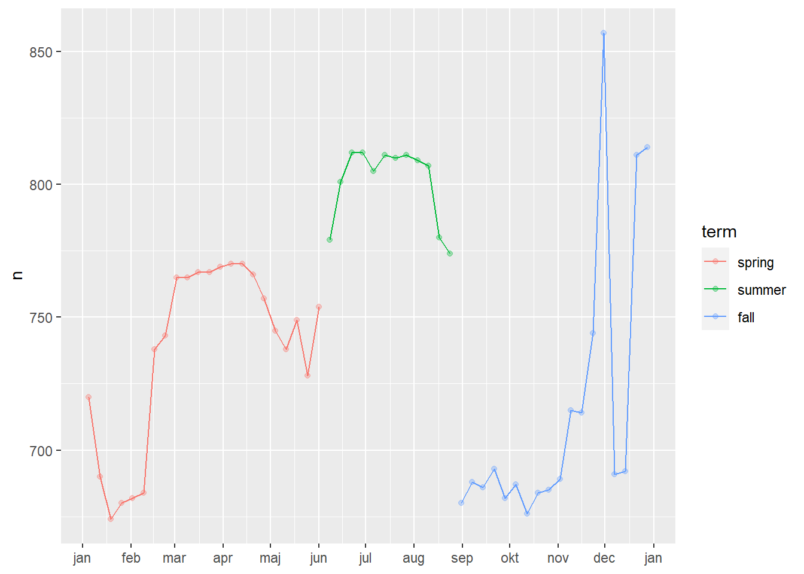
Och vi kollar hur termins-variabeln påverkar de andra dagarna i veckan:
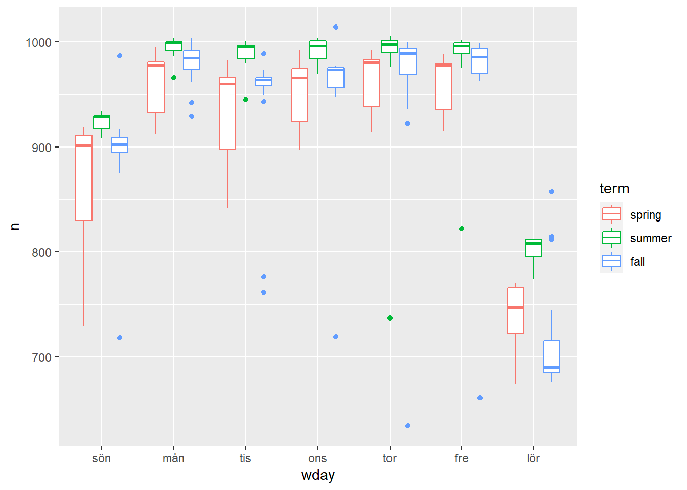
Det ser ut som om det finns en påtaglig variation över terminerna så det verkar rimligt att lägga till veckodagar till modellen:
mod1 <- lm(n ~ wday, data = daily)
mod2 <- lm(n ~ wday * term, data = daily)
daily %>%
gather_residuals(without_term = mod1, with_term = mod2) %>%
ggplot(aes(date, resid, colour = model)) +
geom_line(alpha = 0.75)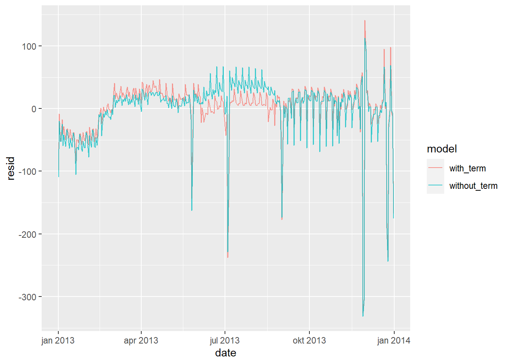
Modellen förbättras men inte så mycket som vi önskat kanske. Om vi nu läggaer på prediktionerna från modellen till rådata ser vi problemet tydligare:
grid <- daily %>%
data_grid(wday, term) %>%
add_predictions(mod2, "n")
ggplot(daily, aes(wday, n)) +
geom_boxplot() +
geom_point(data = grid, colour = "red") +
facet_wrap(~ term)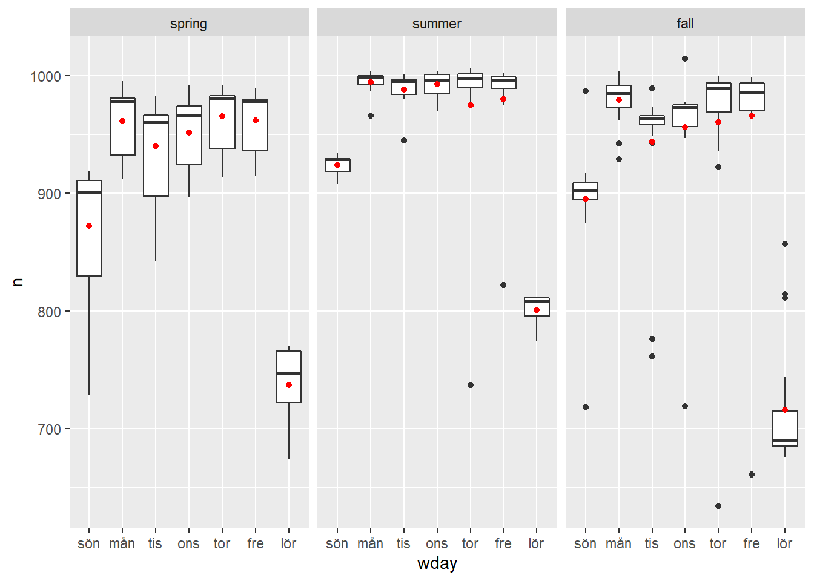
Modellen ger den genomsnittliga effekten men här finns en rad extrema outliers. Vi kan minska effekten från dessa genom att använda en modell som är mindre känslig för sådana outliers, en robust linear model, MASS::rlm():
mod3 <- MASS::rlm(n ~ wday * term, data = daily)
daily %>%
add_residuals(mod3, "resid") %>%
ggplot(aes(date, resid)) +
geom_hline(yintercept = 0, size = 2, colour = "white") +
geom_line()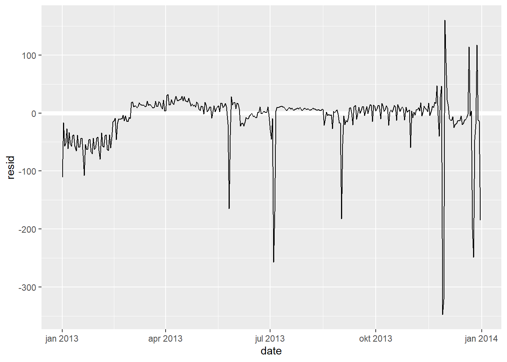
Nu är det betydligt enklare att se den mer långvariga trenden och outliers.
25.3 Lära mer om modellering
Det finns oerhört mycket material för att lära sig mer om hur man kan använda R för att bygga modeller. Det faller utanför ramen för denna kurs men för den som vill veta mer finns mer att läsa och pröva i Wickhams bok (https://r4ds.had.co.nz/model-building.html#time-of-year-an-alternative-approach) och det efterföljande kapitlet Many models (https://r4ds.had.co.nz/many-models.html).
Och därutöver kan rekommenderas
Statistical Modeling: A Fresh Approach Danny Kaplan, http://project-mosaic-books.com/?page_id=13
An Introduction to Statistical Learning Gareth James, Daniela Witten, Trevor Hastie, and Robert Tibshirani, http://www-bcf.usc.edu/~gareth/ISL/